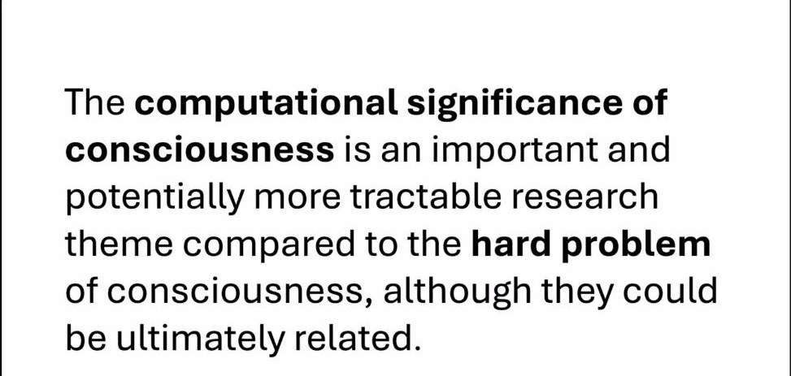
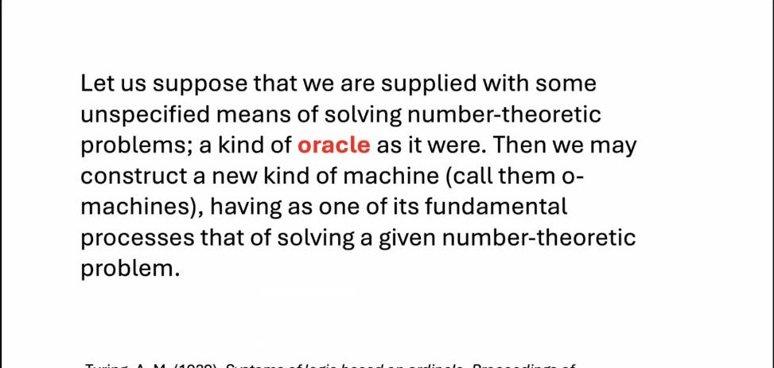
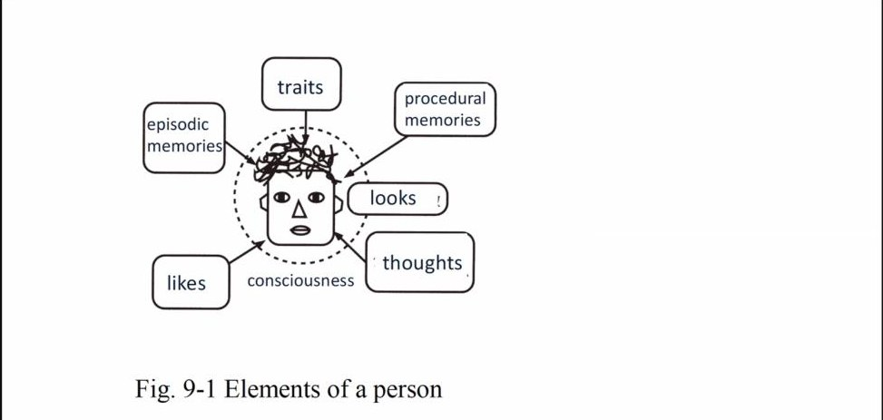
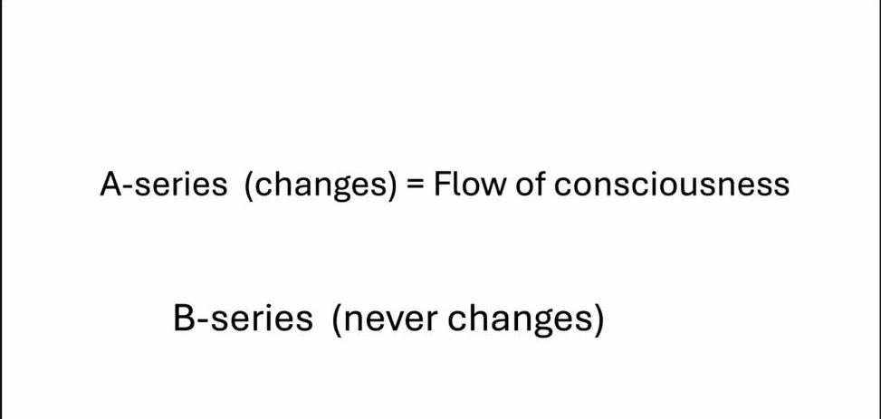

AIまとめ（登壇者本人の確認なし）
Zoomの自動字幕と、それをもとにした実況投稿から、AIがまとめ、別のAIが字幕と突き合わせて確認したものです。登壇者ご本人の確認は受けていません。字幕の誤認識などにより、内容に誤りを含むことがあります。スライド画像は配信画面から切り出したものです。
茂木さんは、意識の「計算上の意義」を、ハードプロブレムより取り組みやすい重要な研究テーマとして提起しました。脳とコンピュータの違いとして「ノイズ」に注目し、ノイズだらけの神経回路から確かなクオリアが生まれることを、チューリングの「オラクル」になぞらえて論じました。さらに、著書『クオリアと人工意識』で示した「一つの意識」という考えから、「人は死ねばその意識は消える」という当たり前の前提を問い直しました。
1. 意識の「計算上の意義」

配信画面より
- 量子コンピュータの「量子的超越（quantum supremacy）」になぞらえて、「意識的超越（conscious supremacy）」という考えを示した。ペンローズの『皇帝の新しい心』（1989年）を出発点に、意識が計算の上でどんな意味を持つのかは、ハードプロブレムより取り組みやすく、重要な研究テーマだと提起した。両者は最終的にはつながっているかもしれない。
- 意識とはメタ認知であり、そのメカニズムが何なのか、自分もまだ答えを出せていない、と語った。
2. ノイズとクオリア、そして「オラクル」

配信画面より（チューリング 1939年の「オラクル」）
- 脳とコンピュータの違いとして見落とされがちなのが「ノイズ」。デジタルコンピュータにはノイズがほとんどないが、神経活動はばらつきが大きい。
- AIは難しいベンチマークもすぐに解くようになるだろうが、意識は、ノイズをいかに頑健に扱うかを抜きには語れない。ノイズだらけの神経回路から、なぜプラトン的に確かなクオリアが生まれるのか。
- チューリングの「オラクル機械」（1939年）を引き、クオリアは計算論的にはオラクルとして働いているのでは、と提案した。
3. 「一つの意識」

配信画面より（人を構成する要素の図）
- 宇宙の電子はすべて同じ一個の電子だとするホイーラーの「一電子宇宙」説になぞらえ、著書『クオリアと人工意識』で示した「一つの意識」という考えを紹介した。
- 処理できる以上の情報を受け取る「センサリー・オーバーフロー」は全生物に共通で、その意味で、意識はあらゆる生物にあると言える。犬や猫など人間以外の生き物の意識が自分の意識と同じだとどう言えるのか、その手がかりとして、ウィトゲンシュタインの「家族的類似」を挙げた（扱うのはカテゴリー論かもしれない、とも）。
- 自己意識は人によらず基本的に同じ形をしており、「魂」と呼べるのは、各人の人生の具体的な履歴の方だ、とした。AIの「soul.md」にも触れた。
4. 同一性と死をめぐって

配信画面より（A系列＝変化する系列・意識の流れ／B系列＝変化しない系列）
- 私たちが当たり前だと思っている「同一性」の起源は、実は当たり前ではない。意識を失う前と後で同じ自分が続いているという継続性も、あやうい基盤の上にある。
- 遠い未来に同一の脳状態が生じうるなら、「ある時に死んでいなくなる」という前提そのものが間違っているのではないか、と論じた。
- 時間については、ベルクソンの「純粋記憶」を引き、ある日の体験のクオリアの流れの例で説明した。
5. LLMとAIの意識
- リチャード・ドーキンスがAI（Claude）に意識があると確信した件に触れ、それを知能と意識の混同だと笑うのではなく、その認知科学的な意味は重大だ、とした。
- LLMが開いたのは、力学的・因果的な理解を経ずに、いきなり結論に至る自然言語の可能性だ。シミュレーションを積み上げずに答えに行く知が、なぜ次トークン予測で可能なのか、まだ誰も分かっていない、と強い関心を示した。
- 生きがいとは、評価関数で評価される前の、生きている経験そのものであり、実存哲学とも関わる。グッドハートの法則（指標が目標になると良い指標でなくなる）やAIアラインメントの問題にもつなげた。『脳とクオリア』の英訳は終わっていて出版社を検討中であり、今後は「一つの意識」と「意識の超越性」を軸にした英語の本を書きたい、と展望を語った。
6. 質疑応答から
- 何万年も後に同じ自分が生まれるという話は、意識が宇宙に漂いアンテナで受信される、といった考え方とどう違うのか、という質問が出た。茂木さんは、経験に即して記述しているだけで、特別な前提を置いているわけではない、と答えた。
- 偶然同じ脳状態ができるという話はスワンプマンの思考実験に近いのでは、意識が続くには因果的な連続性が必要で、偶然の一致では「生き残り」とは言えないのでは、という意見が出た。生体の脳と機械を長い時間つなぐような移行なら連続性は保たれる、という主張もあった。
- 自分のコピーを作る場面について、意識の内容が同じでも、同一性には「タイプとしての同一」と「トークン（時空的につながった一個）としての同一」の区別があり、コピーはトークンとしては別ではないか、という論点が整理された。
- 人格に固有の性質を除いても意識は複数あるのでは、という問いに、茂木さんは、意識が分かれているのはこの世界がたまたまそう身体化されたあり方にすぎない、という趣旨で応じた。
- 固有名の問題と、意識の固有性・連続性の問題が混同されているのでは、という整理もあった。最後に茂木さん自身が、マインドアップローディングをしても純粋記憶はそこにはないので、やはり人間は一回だけなのではないか、とも述べた。